Chapter 4 · Part 2 — Moon Rabbits
“Don’t fall, too,” warned Jack.
“I won’t.” Annie moved very slowly. She half floated, half walked.
“Give me your hand,” she said.
Annie grabbed Jack’s hand. She pressed her boot against his and pulled him up.
“Thanks,” he said.
“No problem,” she said. “It was easy. You were really light.”
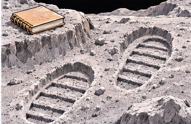
“Thank goodness,” said Jack. “It’s impossible to get up alone.”
He picked up the moon book. It was covered with dust. He brushed it off.
“Oh, wow! Look!” said Annie. She stood at the edge of the crater.
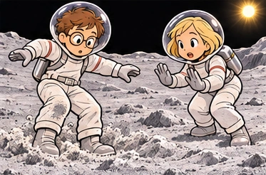
“What is it?” said Jack.
“A moon buggy!” said Annie.
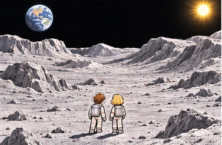
The buggy was parked in the crater. It had four huge wheels.
“Let’s go for a ride,” said Annie.
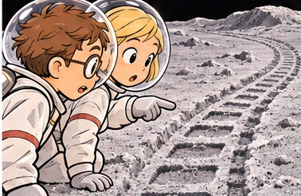
“We can’t,” said Jack. “We just have two hours of air in our tanks. Remember?”
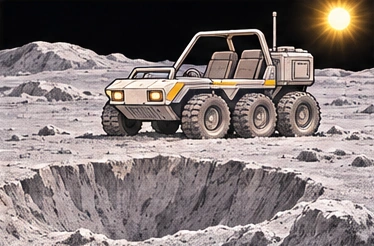
“I bet we’ll find the M thing faster if we take the moon buggy!” Annie bounded into the crater.
“But we can’t drive!” said Jack.
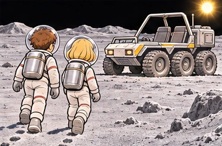
“I bet I can drive this,” said Annie. “It looks easy. Come on!”
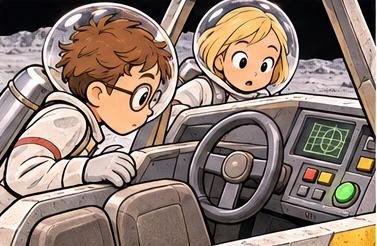
She jumped into the driver’s seat.
“But you don’t have a license!” said Jack.
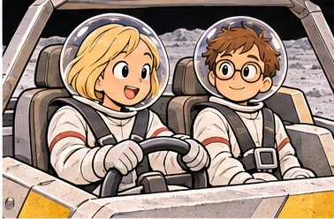
“Who cares?” said Annie. “There aren’t any roads on the moon, or stoplights, or policemen either.”
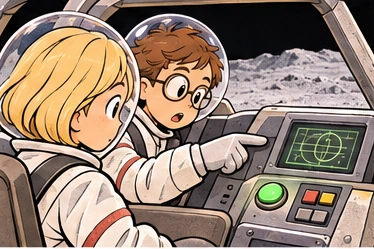
She was right, Jack thought.
“Well, go slow,” he said. And he climbed in beside her.
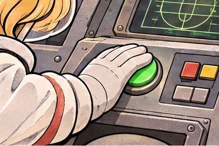
Annie pushed a button labeled ON.
The moon buggy lurched backward.
“Yikes!” said Annie.
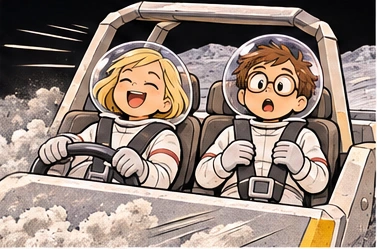
“Step on the brake!” said Jack.
Annie pressed a pedal on the floor. The buggy stopped with a jerk.
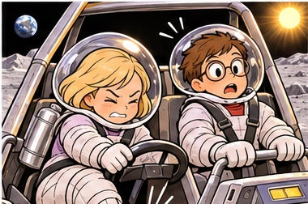
“Whew,” she said.
“It must be in reverse,” said Jack. “Let me study this—”
But before he could study anything, Annie pushed another button.
The buggy tilted back. Its front wheels started to rise into the air.
“Let me out of here!” said Jack.
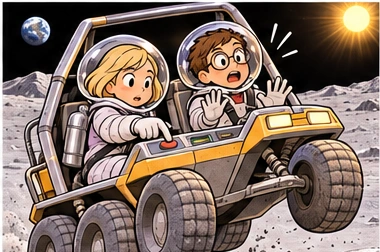
Annie pushed more buttons.
The buggy’s front wheels landed back on the ground. And the buggy leaped forward.
“Slower!” said Jack.
“I can’t,” said Annie. “I don’t know how!”
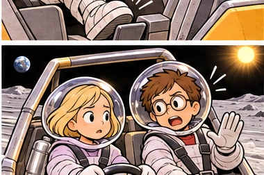
Annie steered the buggy over the tracks on the ground. The wide wheels kept it from sinking into the deep dust.
“Careful!” said Jack.
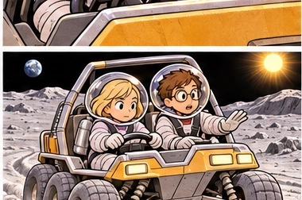
The buggy zoomed out of the crater.
Gray clouds of dust rose behind them as they took off across the moon.
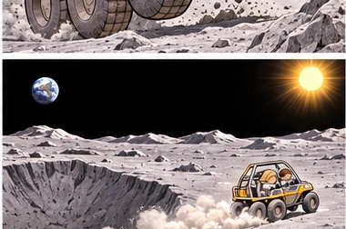